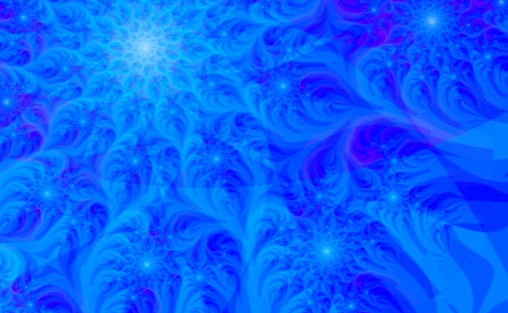
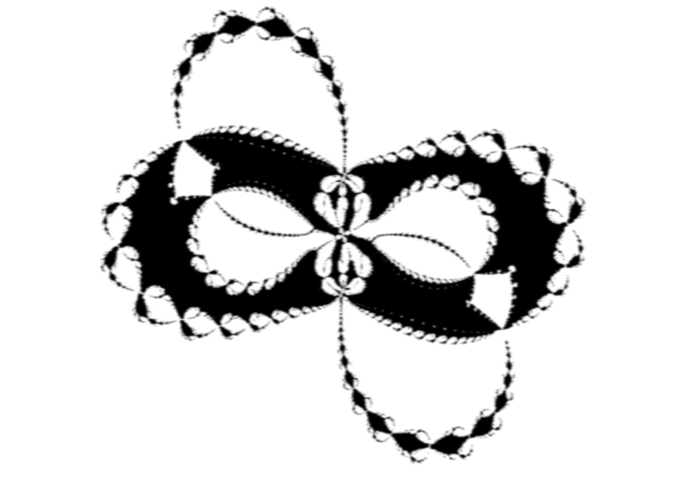
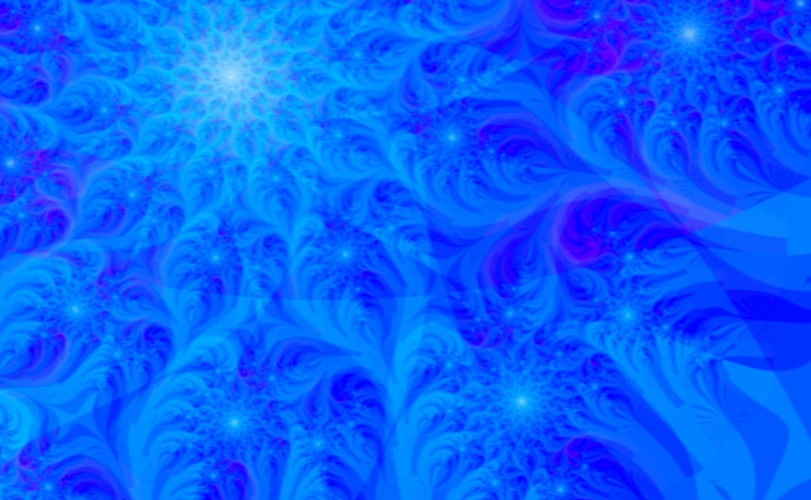
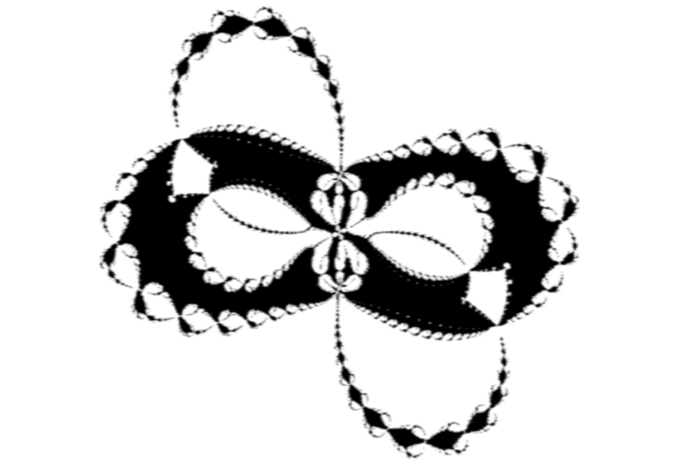
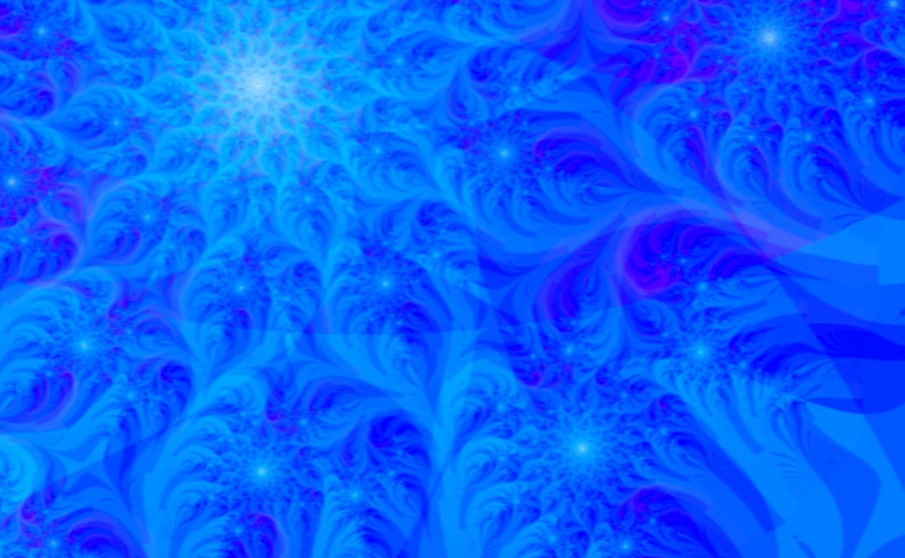
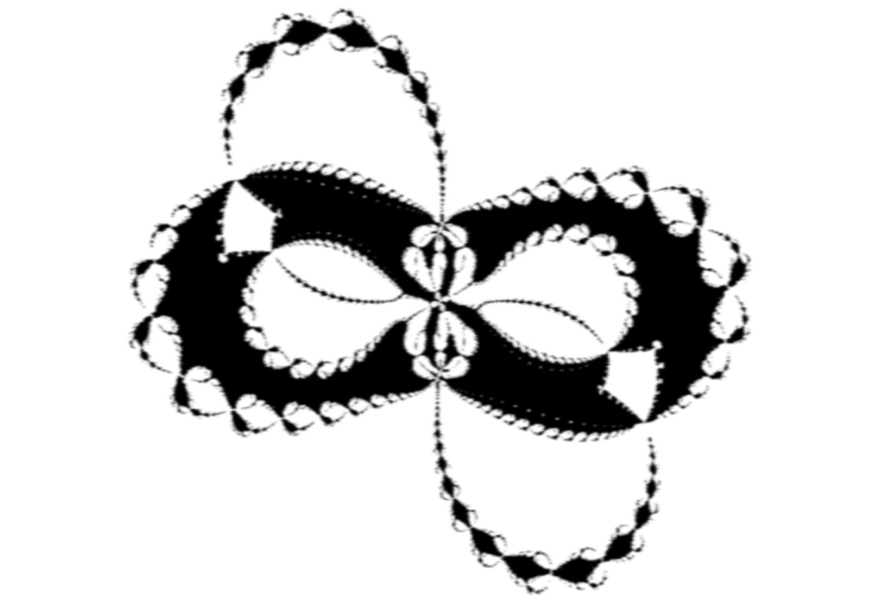
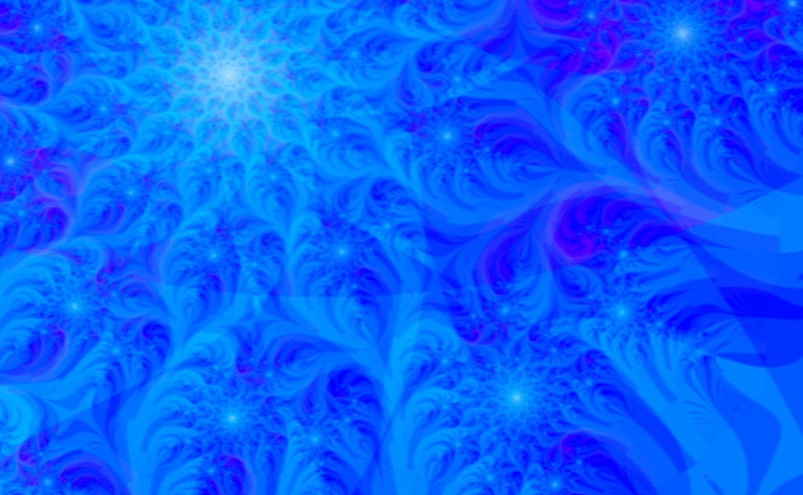
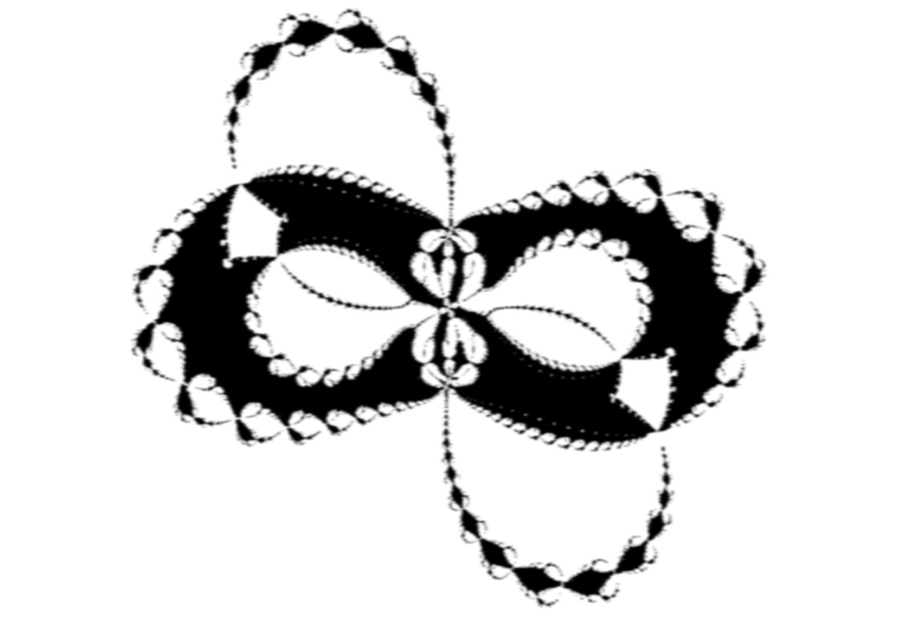
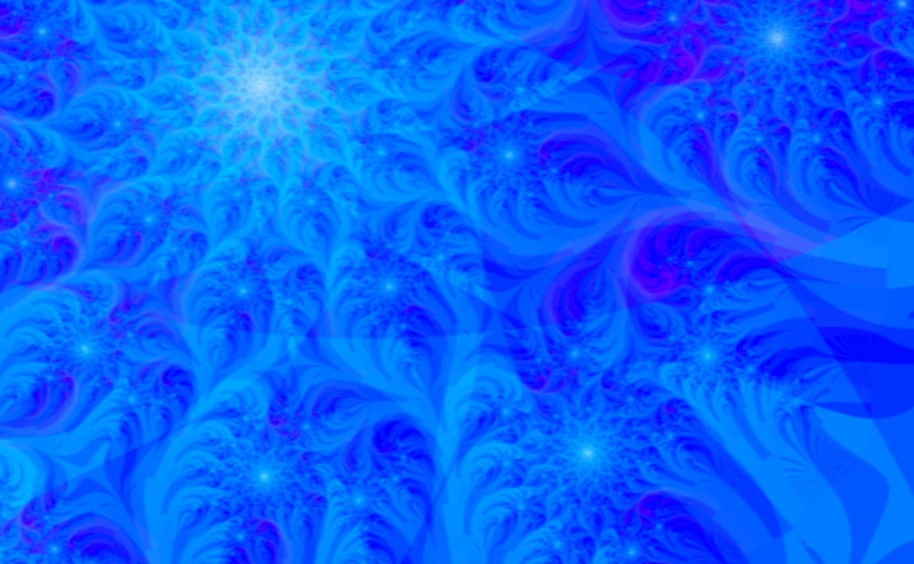
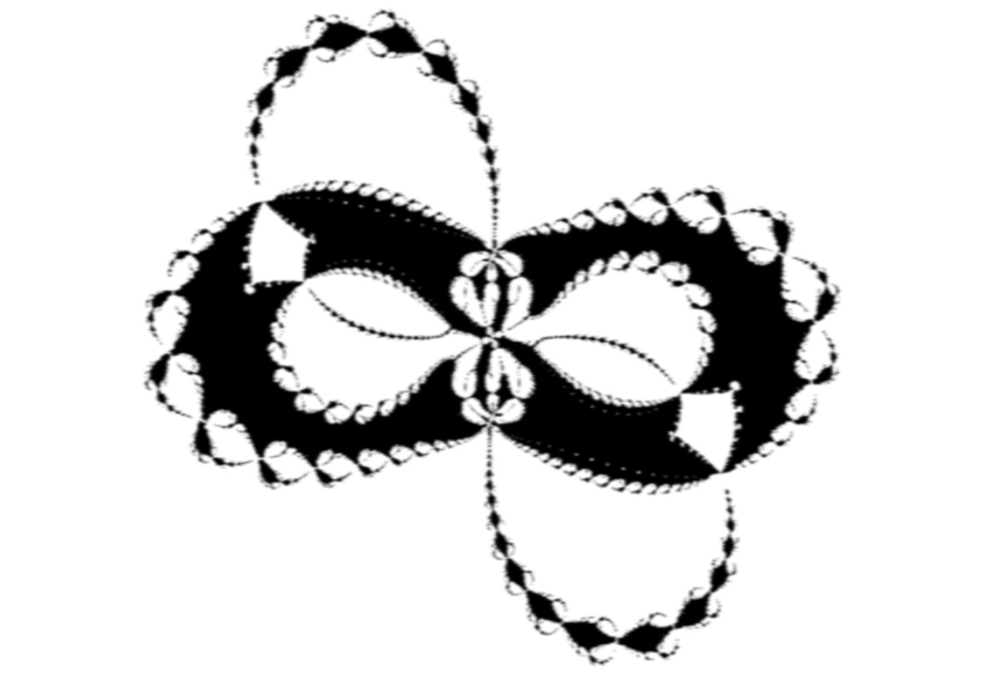

Load Sample
Instructions
 
Create File
Zoom Factor
Current Wheel Param
Mouse Wheel
Wheel Param Value
Wheel Param Delta
Total Zoom
Real Coord
Imag Coord
center X
center Y
width
height
Canvas Mult
Tex Size Mult
Texture Map #
Run
Stop
Last Frame
Current Frame #
Starting Frame #
FPS
Reduce Change in Wheel Param
Change Params using Mouse
Toggle Recenter Julia Params
Snapshot Mode

 






